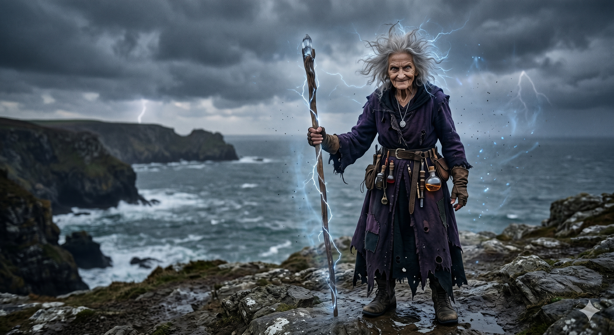

Appears in: Couch Potato Chaos
Profile

-
Appears in: Couch Potato Chaos
-
Aliases: Marina, Gran
-
Class: Lightning Mage (high-level)
-
Personality: Outwardly crotchety, contradictory, and theatrical — she insists on being called “Mad Marina,” lies playfully about her age (claiming seventy, then eighty, then eighty-five within minutes of meeting someone), and weaponizes eccentricity as both shield and entertainment. Beneath the act she is one of the clearest thinkers and most morally steadfast people in Zhakara — a nation that rewards cruelty and self-interest. She refuses to let the system break her, declaring herself “made of sterner stuff” than the society around her. She calls herself “mad” not because she is insane but because she deliberately rejects the sane majority: “The majority of any society must be sane by definition. Frankly, I want nothing to do with those self-interested bastards.” Her contrarian streak extends to combat — she keeps a bomb in her inventory “for years” waiting for the right moment to blow up her own house on the way out of town. She is warm, protective, and fiercely maternal where it counts, taking in a starving infant and a clueless figment without a moment’s hesitation. She encourages Ari’s sarcasm and plays along with his flattery, suggesting a lonely woman who delights in sharp companionship. She is also quietly driven by a private obsession — decades of research into the eidolon Libra, motivated by an unspoken personal question she never gets to ask.
-
Backstory: Marina lived alone in the town of Wilmarth in Zhakara for most of her long life. She describes herself as a “level serf” who once had an arrangement with a local lord to fight mist monsters on his land in exchange for a small room and two meals per day — an arrangement she despised for its unfairness while admitting she envied the power the lord held. She is an aspiring romance novelist who never married and has no children of her own. Over the decades she accumulated deep knowledge of Eidolons, particularly Libra, the eidolon of prophecy, keeping detailed logs of his sightings and movements. At some point she became a high-level lightning mage, though the cost of channeling massive lightning spells would ultimately prove fatal to her aging heart.
-
Significant story events:
- Arrival in Wilmarth (Chapter 27, Chaos): Ari arrives in Wilmarth carrying the abandoned infant Panella. After thugs extort him at the NPC merchant, he meets an elderly woman outside a house who immediately takes the starving baby, scolds Ari for his naivety, and invites them both inside. She introduces herself as Marina — “They call me Mad Marina, though I have no idea why.”
- Raising Pan (Years 1–8, Chapter 27, Chaos): Ari rents a room in Marina’s house and opens a martial-arts school. Marina becomes Pan’s surrogate grandmother, accompanying Ari on wilderness level-grinding sessions to keep the child safe and occasionally casting lightning bolts when things get dicey. She warns Ari to hide his figment nature from the townspeople. Panella’s first word is “Ari,” which Marina finds hilarious and adopts permanently. Pan later calls her “Gran.” When Pan is seven, Marina’s broom closet becomes Pan’s refuge during autistic meltdowns — cold, quiet, and dark.
- The Queen’s “Gift” (Chapter 27, Chaos): When Queen Murderjoy’s delegation arrives offering to power-level Wilmarth’s children by having them murder enslaved elves, Marina instantly recognizes the trap and urges Ari to flee with Pan. After Pan refuses to kill the bound dark elf and is beaten by the mob, Marina’s earlier warning is vindicated.
- The Libra Research (Years 8–11, Chapter 27, Chaos): When Pan learns she will lose her summoner class at sixteen and Ari will disappear, Marina reveals her decades of research into Libra’s movements. She has kept detailed logs of every sighting, hoping to find a pattern. Over three years, the three of them work through predictive models — Pan contributes the key insight of using a four-dimensional hyper-sphere, and they ultimately “rent” an enslaved arachnid mathematician named Spindra who solves it in six dimensions. Marina’s personal question for Libra — hinted at but never revealed — drives much of her motivation, though she always deflects: “Maybe I did [want to ask a question]. I doubt I’ll have the chance now.”
- Escape from Wilmarth and Death (Chapter 27, Chaos): After Spindra reveals the timing of Libra’s next appearance, Marina immediately embraces the escape plan. She kills Spindra’s guard with a lightning bolt, melts the arachnid’s slave collar with a sustained arc of electricity, then blows up her own house with a bomb she has been saving “for years.” At the town gates, she casts a devastating spell — “Ba ken ba shri na ba n’kron ba alstulba!” — that obliterates the gate, the wall, and a guard in a single strike. The overchanneling destroys her heart. Outside the walls, she confesses her true age (107) and refuses a health potion. Her last words to Ari — who asks what her question for Libra was — are: “It doesn’t matter anymore. The two of you have already given me the answer.” Pan takes her hand and says, “Mad Marina… I love you.” Marina’s hand goes limp. Her inventory empties onto the ground, confirming her final death — at 107, Entropy will not resurrect her.
-
Notable Quotes:
“What kind of a fool question is that? Why am I helping a starving child and a clueless traveler? We can’t all be self-interested ne’er-do-wells who abandon their children in the woods. Zhakara will try to break you, to turn you into a bitter person with no moral restraint. I’m made of sterner stuff than that.” — Chapter 27, Mad Marina and the Phantom Child. Marina explains why she took in Ari and Pan.
“The majority of any society must be sane by definition. Frankly, I want nothing to do with those self-interested bastards.” — Chapter 27, Mad Marina and the Phantom Child. Marina explains why she calls herself “mad.”
“It doesn’t matter anymore. The two of you have already given me the answer.” — Chapter 27, Mad Marina and the Phantom Child. Marina’s last words, when Ari asks what she wanted to ask Libra.
“Don’t ma’am me, sonny. I never married, so miss is the appropriate moniker. And just so you know, I’m a high-level lightning mage and aspiring romance novelist, so just in case I’m wrong about you being good people, don’t go thinking that you’re at some sort of advantage.” — Chapter 27, Mad Marina and the Phantom Child. Marina introduces herself properly to Ari.
“Why not? I’m not coming back here, and I don’t want [Lord Hempledon](./character-lord-hempledon-of-wilmarth.html) getting his smelly little hands on my research. Besides, it’s my house. Who are you to tell me whether I can or can’t blow it up?” — Chapter 27, Mad Marina and the Phantom Child. Marina justifies blowing up her own house with a bomb.
-
Relationships: Surrogate grandmother to Panella (“Pan”) Branford, who calls her “Gran.” Close friend and housemate of Aralogos (“Ari”) Branford for roughly a decade — she provides the home, he provides income via his dojo, and together they raise Pan. She ribs Ari constantly about his earnestness and sarcasm but clearly respects him, calling him “one of the clearest thinkers I know.” She frees the enslaved arachnid Spindra during their escape, showing empathy for the non-human enslaved peoples of Zhakara. She is defined by her rejection of Zhakaran cruelty — [Lord Hempledon](./character-lord-hempledon-of-wilmarth.html) represents everything she despises about the system.
-
References: Couch Potato Chaos: Chapter 27 - Mad Marina and the Phantom Child